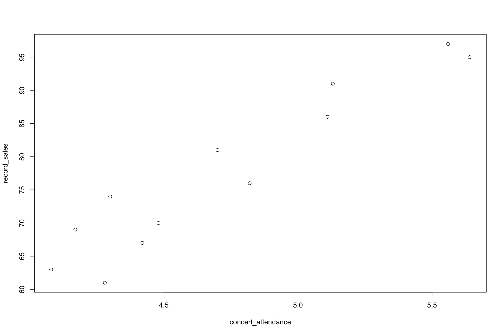

Chapter 10 Correlation and Regression
10.1 Introduction to Correlation and Regression
- In many practical situations we want to identify various types of relationships between variables.
- Sometimes we want to estimate how one variable is related to or affected by some other variables.
- Regression analysis is a statistical technique for investigating and **modeling the relationship between variables*.
- There are numerous applications of regression in many fields.
Examples - A production company may need to determine how its sales related to advertising - How the growth of the bacteria is related to moisture level of the environment. - The relationship between blood pressure and the age of a person. - the relationship between transaction time and transaction amount in fraud detection.
- Usually, the first step in regression analysis is to construct a scatter plot (or scatter matrix).
- Graphing the data in a scatter plot yields preliminary information about the shape and spread if the data.
10.1.0.1 Scatter plot
- A scatter plot is a two dimensional graph of pairs of points from two numerical variables
- In a quantitative bi-variate dataset, we have a \((x,y)\) pair for each sampling unit, where \(x\) denotes the independent variable and \(y\) denotes the dependent variable.
- Each \((x,y)\) pair can be considered as a point on the Cartesian plan.
- Scatter plot is a plot of all the \((x,y)\) pairs in the dataset.
- The purpose of scatter plot is to illustrate any relationship between two quantitative variables.
- If the variables are related, what kind of relationship it is, linear or nonlinear?
- If the relationship is linear, the scatter plot will show whether it is negative or positive. - The scatter plot gives some idea of how well a regression line fits the data.
Example: Palmer Archipelago (Antarctica) Penguin Data
The palmerpenguins data (available through palmerpenguins R package) contains size measurements for three penguin species observed on three islands in the Palmer Archipelago, Antarctica.
Penguin flipper length and body mass show a positive association for the 3 species.
10.1.0.2 Correlation
- Correlation is a measure of the degree of relatedness of two or more variables.
- Several measures of correlation are available , the selection of which depends mostly on the level of data being analysed.
- Ideally, researchers would like to calculate \(\rho\), the population coefficient of correlation.
- However, because researchers virtually always deal with sample data, this section introduces a widely used sample coefficient of correlation, \(r\).
- This measure is applicable only if both variables being analysed have at least an interval level of data
Pearson product-moment correlation coefficient (\(r\))
- The statistic \(r\) is the Pearson product-moment correlation coefficient, named after Karl Pearson (1857 - 1936).
- The tern \(r\) is a measure of the linear correlation of two variables.
- It is a number that ranges from -1 to 0 to +1, representing th strength of the linear relationship between the variables.
- An \(r\) value of \(+1\) denotes a perfect linear positive relationship between two variables.
- An \(r\) value of \(-1\) denotes a perfect linear negative relationship between two variables, which indicates an inverse relationship between two variables: as one variable gets larger, the other gets smaller.
- An \(r\) value of 0 means no linear relationship is present between the two variables.
\[ r = \frac{\sum(x-\bar{x})(y-\bar{y})}{\sqrt{\sum(x-\bar{x})^2\sum(y-\bar{y})^2}}\]
\[ r = \frac{\sum{xy} - \frac{(\sum x\sum y)}{n}}{\sqrt{[\sum{x^2- \frac{(\sum{x})^2}{n}}][\sum y^2-\frac{(\sum y)^2}{n}]}}\]
- Examples: Following figure shows five different degrees of correlation:

NOTE
- When \(r=0\), it signifies there is no linear relationship between the two variables. (There can be a non-linear relationship, Figure (e))
- Figure (e): There is a very strong curvilinear relationship. But there is no linear relationship.
10.2 Simple Linear Regression
- The most elementary regression model is called simple linear regression.
- Is is also known as bivariate linear regression, which means that it involves only two variables.
- On variable is predicted by another variable.
- The variable to to be predicted is called the independent variable an is denoted by \(y\).
- The predictor is called the independent variable or explanatory variable and is denoted by \(x\)
- In simple linear regression analysis, only a strait-line relationship between two variables is examined.
- Nonlinear relationships and regression models with more than one independent variable can be explored by using multiple regression models.
10.2.1 Determining the equation of the regression line
The first step in determining the equation of the regression line that passes through he sample data is to establish the equation’s form.
In mathematics, the equation of a line can be written as \[y=mx+c\] where: \(m\) = slope of the line \(c\) = \(y\) intercept of the line.
In statistics, the slope-intercept form of the equation of the regression line through the population points is: \[\hat{y} = \beta_0+\beta_1x\] where: \(\hat{y}\) = the predicted value of \(y\) \(\beta_0\) = the population \(y\) intercept \(\beta_1\) = the population slope.
For any specific dependent variable value, \(y_i\): \[y_i = \beta_0+\beta_1x_i+\epsilon_i\] where: \(x_i\) = the value of the independent variable for the \(i\)th value \(y_i\) = the value of the dependent variable for the \(i\)th value \(\beta_0\) = the population \(y\) intercept \(\beta_1\) = the population slope \(\epsilon_i\) = the error of prediction for the \(i\)th value.
- Unless the points being fitted by the regression equation are in perfect alignment, the regression line will miss at least some of the points.
In the above equation, \(\epsilon_i\) represents the error of the regression line in fitting these points. If a point is on the regression line, \(\epsilon_i = 0\)
10.2.2 Deterministic models vs probabilistic models
- These mathematical models can be either deterministic models or probabilistic models.
Deterministic models
- Deterministic models are mathematical models that produces an exact output for a given input
- For example, consider the equation of a regression line is: \[\hat{y} =1.68 + 2.40x\].
For a value of \(x=5,\) the exact predicted value of \(y\) is \[\hat{y} =1.68 + 2.40\times 5 = 13.68\]. - However, the most of the time the values of \(y\) will not equal exactly the values yields by the equations. - Random error will occur in the prediction of the \(y\) values for values of \(x\), because it is likely that the variable \(x\) doe bot explain all the variability of the variable \(y\).
Example
- Suppose we want to predict the sales volume (\(y\)) for a mobile phone company through regression analysis by using the annual amount of advertising (in Rupees) (\(x\)) as the predictor.
- Although sales are often related to advertising, there can be other factors related to sales that are not accounted for by the amount of advertising.
- Therefore, a regression model to predict sales volume by the amount of advertising probably involves some error.
- For this reason, in regression, we present the general model as a probabilistic model.
Probabilistic models
- A probabilistic model is one that includes an error term that allows for the \(y\) values to vary for any given value of \(x\).
- The deterministic regression model is \[y=\beta_0+\beta_1x\]
- The probabilistic regression model is \[y=\beta_0+\beta_1x+\epsilon.\]
\(\beta_0+\beta_1x\) is the deterministic portion of the probabilistic model, \(\beta_0+\beta_1x+\epsilon.\)
In deterministic mode, all points are assumed to be on the line and in all cases \(\epsilon\) is zero.
10.2.3 Least squares estimation of the parameters
- The parameters \(\beta_0\) and \(\beta_1\) are unknown and need to be estimated using sample data.
- The equation of the regression line contains the sample \(y\) intercept, \(\hat{\beta_0}\), and the sample slope, \(\hat{\beta_1}\).
\[\hat{y} = \hat{\beta_0}+\hat{\beta_1}x\] where: \(\hat{y}\) = the predicted value of \(y\) \(\hat{\beta_0}\) = the sample \(y\) intercept \(\hat{\beta_1}\) = the sample slope
- To determine the equation of the regression line for a sample of data, the researcher must determine the values of \(\hat{\beta_0}\) and \(\hat{\beta_1}.\)
- This process is sometimes referred to as least squares analysis.
- Least squares analysis is a process whereby a regression model is developed by producing the minimum sum of the squared error values.
- The least squares regression line is the regression line that results in the smallest sum of error squared.
Least square analysis contd.
10.2.4 Residual analysis
- Each difference between the actual \(y\) values and the predicted \(y\) values is the error of the regression line at a given point, \(y-\hat{y},\) and is referred to as the residual.
Example
| Number of CD sales (’000) \(x\) | Concert attendance (’000) \(y\) | Predicted value \(\hat{y}\) | Residual \(y-\hat{y}\) |
|---|---|---|---|
| 61 | 4.280 | ||
| 63 | 4.080 | ||
| 67 | 4.420 | ||
| 69 | 4.170 | ||
| 70 | 4.480 | ||
| 74 | 4.300 | ||
| 76 | 4.820 | ||
| 81 | 4.700 | ||
| 86 | 5.110 | ||
| 91 | 5.130 | ||
| 95 | 5.640 | ||
| 97 | 5.560 |
Except for rounding error, the sum of the residuals is approximately zero
- The analysis of residuals plays an important role in validating the regression model.
- Residual analysis plots are a very useful tool for assessing aspects of accuracy of a linear regression model on a particular dataset and testing that the attributes of a dataset meet the requirements for linear regression.
The following are the assumptions of simple linear regression analysis
- The model is linear.
- The error terms have constant variances. (The assumption of constant variance is called homoskedasticity. If the error variances are not constant, it is called heteroskedasticity.)
- The error terms are independent.
- The error terms are normally distributed.
- Four standard plots can be accessed using the
plot()function in R with the fit variable once the model is generated. - These can be used to show if there are problems with the dataset and the model produced that need to be considered in looking at the validity of the model.
##
## Call:
## lm(formula = concert_attendance ~ record_sales)
##
## Coefficients:
## (Intercept) record_sales
## 1.5698 0.0407
Residual analysis
10.2.5 Coefficient of determination
- A widely used measure of fit for regression ,models is the coefficient of determination \((R^2)\)
- The coefficient of determination is the proportion of variability of the dependent variable (\(y\)) accounted for, or explained by, the independent variable (\(x\))
- The coefficient of determination ranges from 0 to 1.
- An \(R^2\) of zero means that the predictor accounts for none of the variability of the dependent variable and that there is no regression prediction of \(y\) by \(x\).
- An \(R^2\) of 1 means perfect prediction of \(y\) by \(x\) and that \(100\%\) of the variability of \(y\) is accounted for by \(x\)
- The dependent variable, \(y\), being predicted in a regression model has a variation that is measured by the total sum of squares of \(y\) (\(SS_{yy}\)):
\[SS_{yy} = \sum(y-\bar{y})^2= \sum y^2 - \frac{(\sum y)^2}{n}\]
and is the sum of the squared deviations of the y values from the mean value of y.
- This variation can be broken into two additive variations: the explained variation, measure by the sum of squares of regression (\(SSR\)), and the unexplained variation, measured by the sum of squares of error (\(SSE\)).
- The relationship can be expressed in equation from as: \[SS_{yy}=SSR+SSE\] where \(SSR = \sum (\hat{y} -\bar{y})^2\) and \(SSE= \sum (y-\hat{y})^2\).
- If each term in the equation is divided by \(SS_{yy},\) the resulting equation is: \[1=\frac{SSR}{SS{yy}}+ \frac{SSE}{SS{yy}}.\]
- The term \(R^2\) is the proportion of the \(y\) variability that is explained by the regression model and represented here as : \[R^2= \frac{SSR}{SS{yy}}.\]
- Substituting this equation into the preceding relationship gives: \[1=R^2+ \frac{SSE}{SS{yy}}.\]
- Solving for \(R^2\) gives \[R^2=1- \frac{SSE}{SS{yy}}= 1-\frac{SSE}{\sum{y^2}- \frac{(\sum y)^2}{n}}.\]
##
## Call:
## lm(formula = concert_attendance ~ record_sales)
##
## Residuals:
## Min 1Q Median 3Q Max
## -0.28171 -0.14938 0.04101 0.13162 0.22741
##
## Coefficients:
## Estimate Std. Error t value Pr(>|t|)
## (Intercept) 1.569793 0.338083 4.643 0.000917 ***
## record_sales 0.040702 0.004312 9.439 2.69e-06 ***
## ---
## Signif. codes: 0 '***' 0.001 '**' 0.01 '*' 0.05 '.' 0.1 ' ' 1
##
## Residual standard error: 0.1772 on 10 degrees of freedom
## Multiple R-squared: 0.8991, Adjusted R-squared: 0.889
## F-statistic: 89.09 on 1 and 10 DF, p-value: 2.692e-0610.2.6 Relationship between \(r\) and \(R^2\)
- Let \(r\) be the coefficient of correlation.
- The coefficient of determination (\(R^2\)) is the square of the coefficient of correlation
\[r = \sqrt{R^2}\] - The researcher must examine the sign of the slope of the regression line to determine whether a positive or negative relationship exists between the variables and then assign the same sign to the correlation value.
## [1] 0.899083910.3 Multiple Linear Regression
- Multiple regression is an extension of ordinary least-squares (OLS) regression that involves more than one explanatory variable.
- Multiple linear regression (MLR) is a statistical technique that uses several explanatory variables to predict the outcome of a response variable.
- The goal of multiple linear regression (MLR) is to model the linear relationship between the explanatory (independent) variables and response (dependent) variable.
Formula of Multiple Linear Regression
\[y=\beta_0+\beta_1 x_1+\beta_2 x_2+\beta_3 x_3+ \dots + \beta_k x_k+ \epsilon\]
where
- \(y =\) the value of the dependent variable
- \(\beta_0 =\) the regression constant, or intercept
- \(\beta_1 =\) the partial regression coefficient for independent variable 1
- \(\beta_2 =\) the partial regression coefficient for independent variable 2
- \(\beta_k =\) the partial regression coefficient for independent variable k
- \(k =\) the number of independent variables.
More about regression analysis:
References
Black, K., Asafu-Adjaye, J., Khan, N., Perera, N., Edwards, P., & Harris, M. (2007). Australasian business statistics. John Wiley & Sons.
Montgomery, D. C., Peck, E. A., & Vining, G. G. (2012). Introduction to linear regression analysis (Vol. 821). John Wiley & Sons.
Salvatore, D., & Reagle, D. (2002). Statistics and Econometrics, Schaum’s Outline Series.
Tutorial
- The data in the table are the twelve observations corresponding to concert attendance (in thousand) and total worldwide CD sales by the performing artist (or band) in the previous year (also in thousand). Draw a scatter diagram for the data and determine by inspection if there exists an approximate linear relationship between \(X\) and \(Y\)
| Number of CD sales (’000) | Concert attendance (’000) |
|---|---|
| 61 | 4.280 |
| 63 | 4.080 |
| 67 | 4.420 |
| 69 | 4.170 |
| 70 | 4.480 |
| 74 | 4.300 |
| 76 | 4.820 |
| 81 | 4.700 |
| 86 | 5.110 |
| 91 | 5.130 |
| 95 | 5.640 |
| 97 | 5.560 |
- Use the data in Question 1 to develop a regression model to predict concert attendance by CD sales.
R code
record_sales <- c(61,63,67,69,70,74,76,81, 86,91,95,97)
concert_attendance <- c(4.28,4.08,4.42,4.17,4.48,4.3,4.82,4.7,5.11,5.13,5.64,5.56)
# plot(x, y)
plot(concert_attendance, record_sales)
# lm(y ~ x)
reg <- lm(concert_attendance ~ record_sales)
reg##
## Call:
## lm(formula = concert_attendance ~ record_sales)
##
## Coefficients:
## (Intercept) record_sales
## 1.5698 0.0407##
## Call:
## lm(formula = concert_attendance ~ record_sales)
##
## Residuals:
## Min 1Q Median 3Q Max
## -0.28171 -0.14938 0.04101 0.13162 0.22741
##
## Coefficients:
## Estimate Std. Error t value Pr(>|t|)
## (Intercept) 1.569793 0.338083 4.643 0.000917 ***
## record_sales 0.040702 0.004312 9.439 2.69e-06 ***
## ---
## Signif. codes: 0 '***' 0.001 '**' 0.01 '*' 0.05 '.' 0.1 ' ' 1
##
## Residual standard error: 0.1772 on 10 degrees of freedom
## Multiple R-squared: 0.8991, Adjusted R-squared: 0.889
## F-statistic: 89.09 on 1 and 10 DF, p-value: 2.692e-06## integer(0)
- An executive at a telecommunications company is interested in the relationship between an individual’s income and their mobile-phone usage. In particular, to help him in pricing and marketing strategies, he is interested in ascertaining whether he can us an individual’s gross annual income to predict how much time they will spend on making National Direct Calls from their mobile phone per week. He surveyed 12 mobile-phone users and recorded their annual income and time (in minutes) spent each week making National Direct Calls.
| Annual income (’000) | Weekly time on National Direct Calls ( minutes) |
|---|---|
| 23 | 69 |
| 29 | 95 |
| 29 | 102 |
| 35 | 118 |
| 42 | 126 |
| 46 | 125 |
| 50 | 138 |
| 54 | 178 |
| 64 | 156 |
| 66 | 184 |
| 76 | 176 |
| 78 | 225 |
- Compute coefficient of determination (\(R^2\)) for Question 2 (CD-concert question). Discuss the value of \(R^2\) obtained.
- Compute the coefficient of determination (\(R^2\))for question 3 in which a regression model was developed to predict weekly mobile phone call times by a person’s income. Discuss the value of \(R^2\) obtained.
- What is meant by and what is the function of
- Simple regression analysis
- Linear regression analysis
- A scatter diagram
- An error term